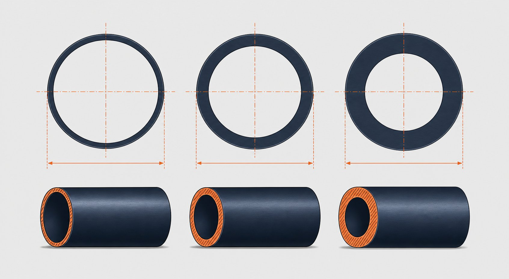

اسچول لوله چیست و چرا یک عدد «اسمی» است؟
در پروژههای پایپینگ، ضخامت دیواره لوله مستقیماً تحمل فشار، مقاومت مکانیکی و عمر سرویس را تعیین میکند. بهجای درج ضخامت میلیمتری در همه مدارک، صنعت از عدد اسمی اسچول استفاده میکند. رابطه کلی این است که نسبت فشار داخلی مجاز به تنش مجاز مواد با ضخامت دیواره تنظیم میشود؛ بنابراین برای یک قطر اسمی ثابت، هرچه اسچول بالاتر باشد دیواره ضخیمتر و تحمل فشار بیشتر است.
نکته مهم این است که اسچول یک عدد بدون بُعد است؛ یعنی SCH 40 در سایزهای مختلف، ضخامتهای متفاوتی دارد. اشتباه گرفتن اسچول با ضخامت ثابت یکی از رایجترین خطاهای خرید است و میتواند منجر به عدم تطابق با اتصال یا رد شدن در بازرسی شود.

استانداردهای ابعادی حاکم بر اسچول
ابعاد لولههای فولادی در دو استاندارد اصلی تعریف شده است:
- ASME B36.10M برای لولههای کربنی و آلیاژی: قطر خارجی از نیم اینچ تا ۱۰۰ اینچ و سریهای اسچول شامل 5، ۱۰، ۲۰، ۳۰، ۴۰، استاندارد، ۶۰، ۸۰، ضخیم، ۱۰۰، ۱۲۰، ۱۴۰، ۱۶۰ و دو ایکسایکس.
- ASME B36.19M برای لولههای زنگنزن: همان قطرهای خارجی اما سریهای اسچول با پسوند اس مانند ۵ اس، ۱۰ اس، ۴۰ اس و ۸۰ اس؛ ضخامت برخی از این سریها از معادل کربنی کمتر است.
- قطر خارجی هر سایز در هر دو استاندارد یکسان است؛ بنابراین لوله ۲ اینچ کربنی و استنلس روی قطر خارجی مشترک سوار میشوند و تفاوت فقط در ضخامت دیواره است.
جدول ضخامت و وزن برای سایزهای پرمصرف
| سایز اسمی | قطر خارجی (میلیمتر) | SCH 40 — ضخامت | SCH 40 — وزن | SCH 80 — ضخامت | SCH 80 — وزن |
|---|---|---|---|---|---|
| نیم اینچ | 21.3 | 2.77 | 1.27 | 3.73 | 1.62 |
| 1 اینچ | 33.4 | 3.38 | 2.50 | 4.55 | 3.24 |
| 2 اینچ | 60.3 | 3.91 | 5.44 | 5.54 | 7.48 |
| 4 اینچ | 114.3 | 6.02 | 16.07 | 8.56 | 22.32 |
| 6 اینچ | 168.3 | 7.11 | 28.26 | 10.97 | 42.56 |
| 8 اینچ | 219.1 | 8.18 | 42.55 | 12.70 | 64.64 |
| 10 اینچ | 273.0 | 9.27 | 60.31 | 15.09 | 95.87 |
| 12 اینچ | 323.8 | 10.31 | 79.73 | 17.48 | 132.08 |
ضخامت بر حسب میلیمتر و وزن تقریبی بر حسب کیلوگرم بر متر برای لوله کربنی — مقادیر از جداول ابعادی استاندارد استخراج شدهاند.
فرمول محاسبه وزن لوله
برای برآورد وزن هر متر لوله فولادی میتوان از رابطه زیر استفاده کرد:
در این رابطه قطر خارجی و ضخامت بر حسب میلیمتر است. برای مثال لوله ۴ اینچ SCH 40: حاصلضرب تفاوت قطر و ضخامت در ضخامت و در ضریب، حدود ۱۶ کیلوگرم بر متر میشود که با جدول بالا همخوانی دارد. این فرمول برای برآورد تناژ کل خط و محاسبه هزینه حمل کاربرد مستقیم دارد.
انتخاب اسچول مناسب برای پروژه
- فشار و دمای طراحی: ضخامت حداقل باید از محاسبه فشار مطابق کد پایپینگ پروژه بهدست آید؛ اسچول فقط یک گزینه تجاری از پیشساخته است.
- خورشیدگی خوراک: در سرویسهای خورنده، خوردگی خوراک به ضخامت محاسباتی اضافه میشود و ممکن است اسچول بالاتری را الزامی کند.
- تطابق با اتصالات: اتصالات جوشی لببهلب باید همان اسچول لوله باشند؛ عدم تطابق ضخامت باعث پلهشدن محل جوش و تمرکز تنش میشود.
- محدودیتهای نصب: افزایش اسچول وزن خط و بار ساپورتها را بالا میبرد و هزینه را افزایش میدهد؛ انتخاب بیش از حد محافظهکارانه توجیه اقتصادی ندارد.
اشتباهات رایج در خرید لوله با اسچول
- فرض کردن ضخامت ثابت برای یک اسچول در همه سایزها.
- سفارش لوله استنلس بدون پسوند اس و دریافت ضخامت نامتعارف.
- عدم ذکر طول شاخه (تصادفی یا دوبرابر تصادفی) در استعلام که روی تعداد شاخه و قیمت اثر دارد.
- غفلت از گواهی مواد نوع ۳٫۱ و شماره ذوب در سرویسهای فشاری.
- خلط وزن اسمی جدولی با وزن واقعی تحویلی؛ تولرانس ضخامت باید در قرارداد شفاف باشد.
جمعبندی برای مهندس خرید
اسچول زبان مشترک طراحی و خرید لوله است؛ اما هرگز جایگزین محاسبه ضخامت نمیشود. در استعلام خود سایز، اسچول، استاندارد ساخت، نوع درز و گواهی مواد را صریح ذکر کنید و در زمان تحویل، ضخامت را در نقاط مختلف شاخه با کولیس یا ضخامتسنج راستیآزمایی کنید.
سوالات رایج
آیا ضخامت اسچول ۴۰ در همه سایزها یکسان است؟
خیر. اسچول یک عدد اسمی بدون بُعد است و ضخامت واقعی در هر سایز متفاوت است؛ برای مثال ضخامت دیواره در SCH 40 حدود ۲٫۷۷ میلیمتر است اما در ۱۲ اینچ SCH 40 حدود ۱۰٫۳۱ میلیمتر میشود.
تفاوت اسچول استاندارد (STD) با SCH 40 چیست؟
در سایزهای تا ۱۰ اینچ، ضخامت استاندارد و SCH 40 عملاً یکسان است؛ از ۱۲ اینچ به بالا ضخامت استاندارد روی ۹٫۵۳ میلیمتر ثابت میماند اما SCH 40 با سایز افزایش مییابد.
چرا ضخامت لوله استنلس با پسوند S ثبت میشود؟
استاندارد ابعاد لولههای زنگنزن ابعاد لوله کربنی، SCH 5S تا ۱۶۰ را با پسوند اس تعریف میکند و ضخامت برخی اسچولها مانند SCH 5S و ۱۰ اس از معادل کربنی کمتر است.
برای خطوط بخار چه اسچولی انتخاب میشود؟
انتخاب اسچول بر اساس فشار و دمای طراحی و محاسبه ضخامت حداقل طبق استاندارد مربوطه انجام میشود؛ در بسیاری از خطوط بخار فشار قوی SCH 80 و بالاتر رایج است و عدد اسچول بهتنهایی مجوز انتخاب نیست.
مطالب مرتبط
- راهنمای جامع لوله مانیسمان (بدون درز)
- راهنمای ابعاد لوله طبق ASME B36.19
- استاندارد ابعاد لوله کربنی (ASME B36.10M)
- راهنمای کامل ابعاد لوله — نامی، دونامی، اسچول و ضخامت
- مقایسه لوله بدون درز و درزدار
برای استعلام لوله، سایز، اسچول، استاندارد ساخت (مثل ابعاد لوله کربنی)، نوع درز، طول شاخه و گواهی مواد را در درخواست ثبت کنید. کارشناسان پس از بررسی، قیمت، موجودی و زمان تحویل را اعلام میکنند.
مشاهده صفحه محصول ثبت RFQ همین محصولتامین این تجهیزات را به پیشرو تجهیز فرتاک بسپارید
شرکت پیشرو تجهیز فرتاک تامینکننده تخصصی تجهیزات صنعتی برای پروژههای نفت، گاز، پتروشیمی، فولاد و نیروگاهی است. برای دریافت پیشنهاد فنی و قیمت، استعلام (RFQ) خود را ثبت کنید تا کارشناسان مهندسی فروش در کوتاهترین زمان پاسخ دهند.
- تامین لوله مانیسمان و درزدارتامینکننده لوله کربنی، آلیاژی و استنلس با گواهی مواد
- تامین تجهیزات پایپینگفلنج، اتصالات و شیرآلات مطابق نقشه و متریال پروژه